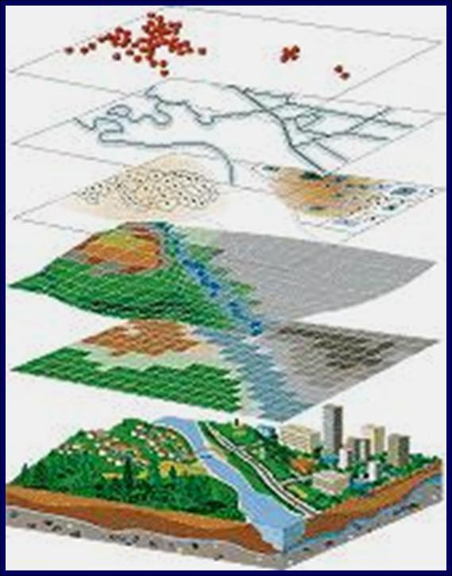

Tipologie dati¶
Esistono due grandi categorie di dati:
- vettori (punti, linee, poligoni)
- raster (../immagini)
Un vettore è una figura descritta da precise equazioni matematiche, infatti non ha problemi di qualità quando ridimensionato. Un raster è un’immagine, quindi una matrice in cui ogni cella ha una particolare informazione:
Vettori¶
Un layer vettoriale rappresenta la realtà attraverso delle geometrie quindi attraverso delle formule matematiche per precise. Proprio per questo motivo non soffrono del problema della risoluzione.
Queste geometrie sono essenzialmente di 3 tipi:
- punti
- linee
- poligoni
Ogni vettore è accompagnata da una tabella degli attributi, ovvero un database di informazioni su quella geometria. Es. punto che rappresenta una albero, la tabella può contenere delle informazioni riguardandi:
- coordinate
- tipologia di albero
- altezza
- potatura
- ecc...
Un formato molto comune per i vettori è lo ESRI shapefile. Un vettore codificato in shapefile è composto da almeno 3 file:
- vettore.shp (informazioni sulla forma)
- vettore.dbf (database degli attributi)
- vettore.shx (collega le geometrie agli attributi)
Spesso troviamo anche altri file:
- vettore.prj (informazioni sulla proiezione) –> fondamentale per informazioni sulla localizzazione
- vettore.cpg (informazioni sulla codifica)
- vettore.qpj (informazioni sulla proiezione scritti da QGIS)
Note
il file dbf si può tranquillamente aprire con gestori di fogli elettronici (Excel, Libreoffice). Tuttavia è sconsigliatissimo correggere o aggiungere dei valori in questo modo, un piccolo errore e il file risulterà corrotto.
Il formato shapefile non è l’unico disponibile, ma semplicemente il più utilizzato. Ha diverse limitazioni:
- campo tabella dbf può contenere al max 10 caratteri
- non si possono memorizzare valori nulli. Se il dato manca viene assegnato automaticamente il valore 0
- campi di testo al massimo 255 caratteri
- se ci sono tante geometrie, la risposta del file rallenta considerevolmente
- problemi di codifica
- ogni shapefile ha almeno 3 file
- moltiplicazione durante il flusso di lavoro
Alternative allo shapefile sono i geo database, PostGIS (interfaccia client-server) e SpatiaLite (unico file per n shapefile). Un po’ più complessi da utilizzare all’inizio sono molto comodi, pratici e veloci.
Ci sono davvero decine di tipi di file vettoriali diversi:
- GML
- KML
- GeoJSON
- ...
Raster¶
I raster sono delle ../immagini, ovvero delle matrici con informazioni numerica per ogni cella (pixel). Maggiore è il numero di pixel (risoluzione) e maggiore è il dettaglio delle informazioni.
Un raster contiene un’unica informazione (a differenza dei vettori).
Tipico esempio di raster sono i DEM (Digital Elevation Models) dove a ogni pixel è associata l’informazione della quota:
Come per i vettori, anche per i raster esistono decine e decine di formati diversi:
- TIFF - GEOTIFF
- JPEG
- PNG
- BITMAP
- ...
Ognuno con pregi e difetti. Alcuni puntano a comprimere i dati per occupare meno spazio su disco, perdendo qualità. Alti incorporano direttamente le informazioni di localizzazione senza bisogno di altri file aggiuntivi.
Vettore o raster?¶
Vettori e raster sono dati complementari e non esclusivi, cioè integrando queste due tipologie di dato si potrà fare un’analisi completa e accurata:
- vettori sono ideali per informazioni non continue (singolo albero)
- raster sono utili per descrivere informazioni continue nello spazio (distesa erbosa)
Integrando entrambi i dati si ottiene una mappa completa:
{kind=link}